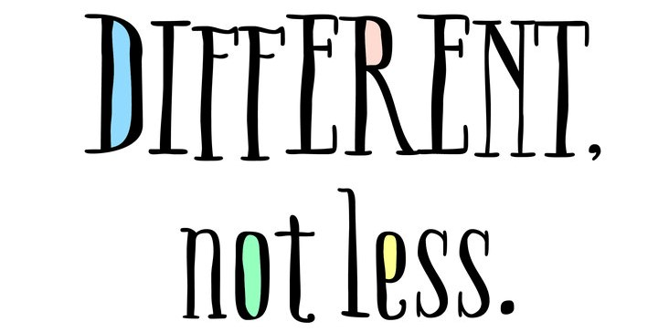

‘Autistic’ or ‘person with autism’?
What kind of language do we use to talk about people who are usually referred to as ‘special needs’ or ‘differently-abled’? There is a huge debate, usually framed in terms of ‘person first language’ or ‘identify first language’. How to look at the question and the debate surrounding it? What is a sensible position to take? My thoughts below.

Is language important? Yes. Are labels important? Yes. From various points of view – clinical, representational etc. – labels and language are important.
The question we are grappling with is, what is the kind of language we use for the labels?
First off, not withstanding whatever else I say further on, I am fully with the idea that the people who are being labelled and the people who know them best should have the freedom to make these calls. Also, agree that these calls may change from setting to setting. And whatever my thinking is, I will respect the decisions made by them.
Having said that, in the absence of a preference indicated by someone (because the moment they indicate a preference, I just fall in line, no need to think further), or in a public forum where I might be addressing different people with a variety of preferences, how do I take this call? Once I or somebody takes a call to use a certain kind of language, how should the others react?
Lets get the obvious out of the way first. I guess we agree that words like ‘handicapped’, ‘వికలాంగులు’, ‘divyanga’ are not necessarily more respectful or sensitive. These are arbitrary labels that do not perform any of the functions of the language and labels we outline above.
Let’s then take two steps back and look at some common adjectives used to describe people: short – tall, fat – thin, dark – fair etc. Why is ‘shorty’ or ‘fatso’ a negative word while ‘tallly’ or ‘thinso’ is not? Is it because of the word, or is it because of the negative value that we as a society attach to being short or being fat?
Imagine, tomorrow the sky turns into a solid roof and comes down to five foot high from the ground. All the tall people will have to go around with their backs bent. Do we think ‘shorty’ would be a negative word then? In the land of the blind, would a one eyed man be king or be an outcast, isolated for his freakish behavior?
We can also look at more ‘real’ examples. Take the case of the dalits. There was a time when calling someone a ‘dalit’ was an insult. Today, we have people proudly adding words like ‘mala’ and ‘madiga’ to their names. Did this self respect and confidence come because the society called them ‘harijans’? I would think that the self respect came when they started proudly proclaiming their identities, no longer believing that the identity is a disadvantage.
In short, the society (which is you, me and us, no need to externalize and demonize it) steps carefully around identities which it believes to be at a disadvantage. The ginger-ness does not necessarily relieve the perceived disadvantage. When “the labelled” are comfortable with themselves and the society is by-and-large okay with them, the label really does not matter.
So, if we really believe the differences are just differences and nothing more and nothing less, we should just be clear in our language. There is no need to be extra-cautious.
So, subject to the caveats described in the second paragraph above, I would rather say ‘autistic child’ and not unnecessarily complicate the language.
At this point I am also informed by some of the opinions expressed by autistic adults. In fact, a survey (Reference at the end) found that “the term ‘autistic’ was endorsed by a large percentage of autistic adults, family members/friends and parents but by considerably fewer professionals”. The survey also concluded “These findings demonstrate that there is no single way of describing autism that is universally accepted and preferred by the UK’s autism community and that some disagreements appear deeply entrenched.”
Now to the other question – Once I or somebody takes a call to use a certain kind of language, how should the others react? Do not assume disrespect or any other negative emotion. As discussed above, the choice of language is a complicated one to make and there may not be a single correct way of making that choice. Recognise that there is no “right” way of making that choice. If you are being addressed a certain way and you have a different preference, let it be known politely and expect the other person to respect your choice. Do not assume malice where an assumption of ignorance is sufficient. Or there might genuinely be scope for a different point of view.
PS: As I think about it, I would be much less comfortable saying someone is ‘blind’ and would rather say ‘visually impaired’. Why this different standard? Is it because I am much less familiar with blindness, compared to autism? Or am I making an as-yet-unexamined assumption about blindness?
How does this then work with people whose exposure to ‘different’ populations is limited?
References:
Lorcan, K., Hattersley, C. Molins, B. Et al. Which terms should be used to describe autism? Perspectives from the UK autism community: Autism, Vol 20, Issue 4, pp. 442 – 462, First Published July 1, 2015